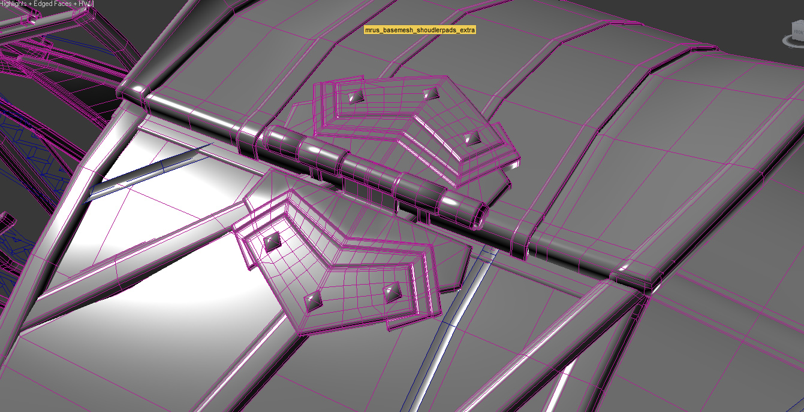
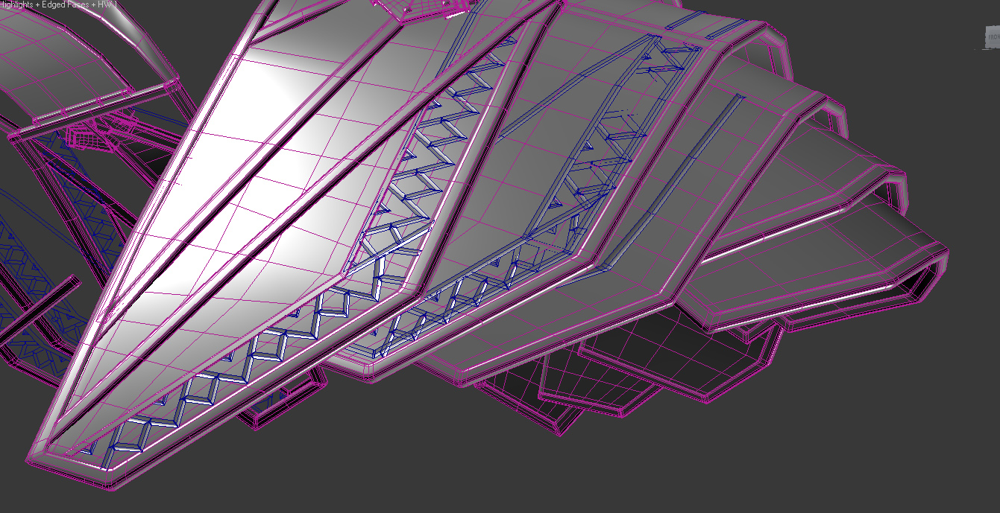
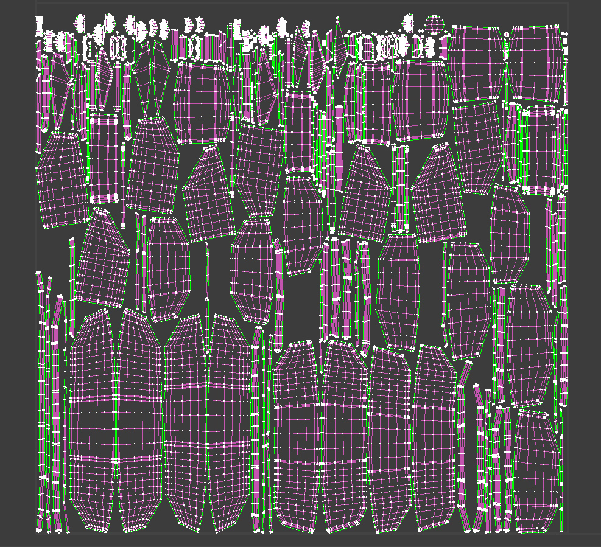
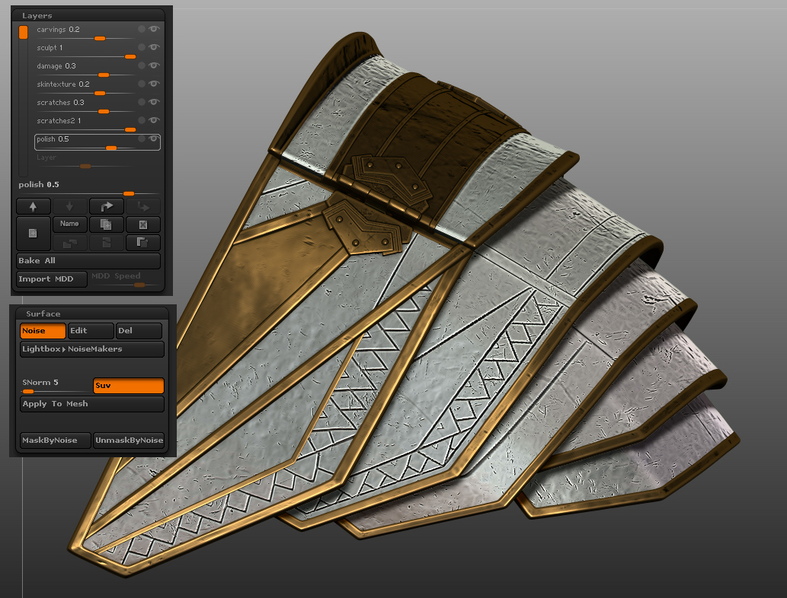
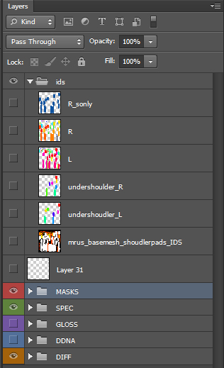
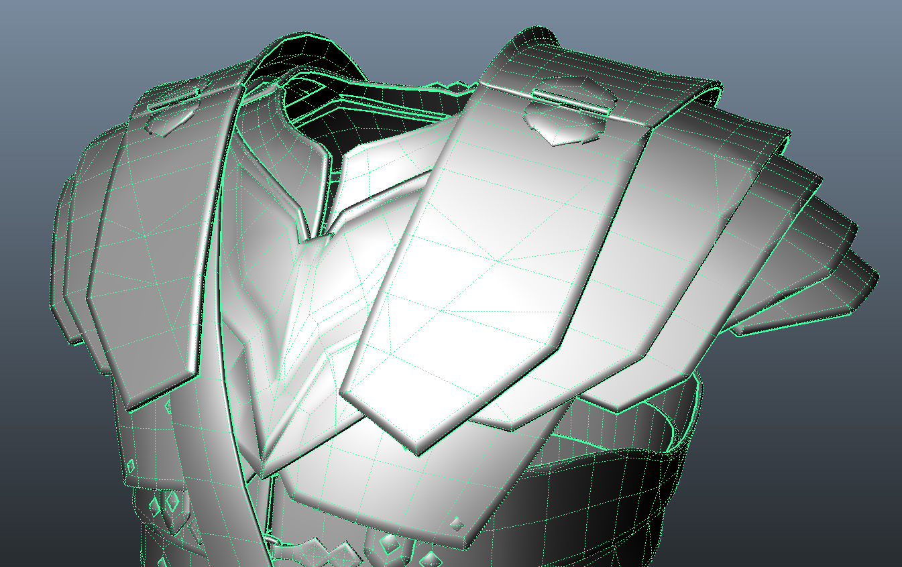
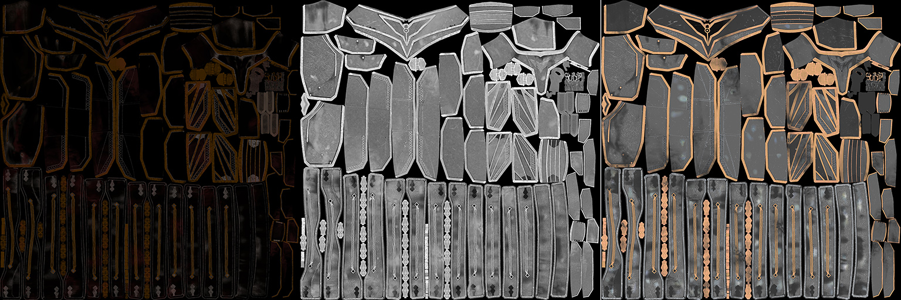
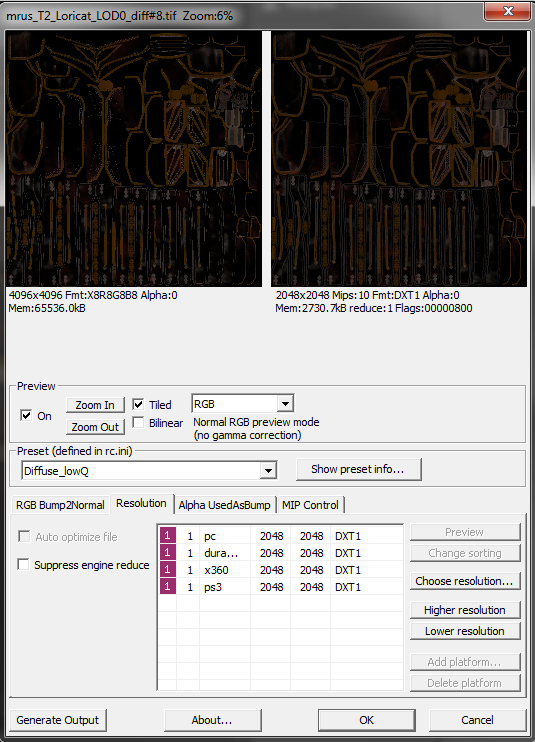
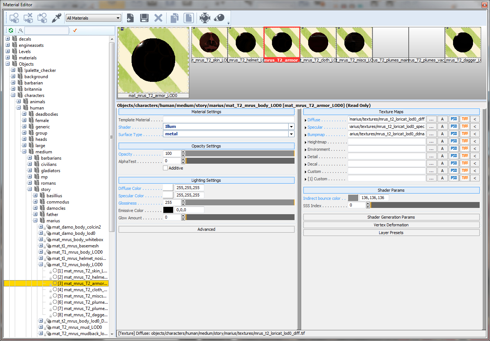

Overview
In Ryse there is a large proportion of the characters that use metal armor, the workflow below was used in the creation of Marius and the Roman soldier variations such as the Legionary and Praetorian.
Basemesh and HighPoly Blockout
The basemesh is constructed to a high level with the large volumes of the armor worked to a highpoly level to allow tech art to test the mesh, for this Max was used.
Large and medium details are modeled to allow for clean and workable surfaces, these are constructed using subdivision workflow to make sure the volumes are kept when dividing the geometry in Zbrush.

For the smaller details these are also modeled but left as floating geometry, for example these would be the grooves in the armor of the deco details – these elements do not need UVs as their purpose is for adding surface details efficiently in Zbrush.

HighPoly UV’s
The texturing of the armor is completed by texturing the highpoly asset and will needs supporting UV’s.
The highpoly can have as many UV tiles as required to achieve the detail required, the only real requirements is that the layout is logical and can be easily followed.

The UV’s must also have minimal stretching with no over lapping and will allow the model to hold up in the engine.
ZBrush
All elements are imported into Zbrush for detailing. Details should be done on layers to allow for manual adjustment of the details, it is also important to achieve a high enough resolution to make sure the details are held for normal map baking.
Details such as the grooves and deco details are projected using the floating geometry details imported from Max/Maya, these details are sculpted onto a layer to allow for adjustment of the strength. For other details such as scratches/dents Noisemaker presets are used to help maintain a unified look across the whole of the armor, it is important to maintain unification as the armor is worked on is split chunks. Further asymmetrical details such as scratches/dents are added by hand.
All the details are logical and natural in their placement, consideration is given to the location of the wear and tear. When doing the details a matcap that is effective for showing the details should be used for better visual feedback of the detail placement.

HighPoly Texturing
The highpoly asset is textured, with a combination of Zbrush and Photoshop. Material ID’s are used to allow for quick masking in Photoshop and material separation.
Texturing must be done at the highest possible resolution, for Ryse 4096 x 4096 was used for each highpoly texturing chunk and completed as a PSD.
Masks are also created in Zbrush for cavities and locations where dirt would gather, this allows for more efficient texturing in Photoshop and helps to make natural placement of dirt and gathered grime.

The PSD layout is kept logical and easy to follow.
The textures must be checked in the build using a cgf, for this a basemesh is used in conjunction of a baked normal map.
Each highpoly chunk has its own PSD that is broken down to include;
DIFFUSE- there should be no lighting information in this map.
SPEC – has to use the set PBL values set for the build, again this has no lighting information. In this map variation between materials can be set out, for example Iron has a value of 196,199,199 but Dirt is in the region of 51,51,51.
With the exception of colored metals spec values are of the grey scale, all metals are of a high spec value. For non metals all values are between 40 to 65.
GLOSS – this is used adjust the roughness of the material; this map is used to add variation to the surface - this map is very important and will handle the detail that seperates the materials.
NORMALS – this is baked in the same process as for all normal maps.
LowPoly
The basemesh is used as a starting point and worked up from, the larger volumes are maintained whilst all the finer and smaller details are modeled over and handled via the normal map.

The low poly model followed the set poly budget maintaining efficient use of polys.
UVs
The UVs are laid out in a logical way, for example all the upper body armor is laid out into one UV space between 0 to 1, all the UVs must have minimal spacing but allow for edge padding.
Baking the LowPoly Textures
Textures are baked down from the highpoly using xNormal and require no re-working, the process for baking uses xNormal with the Cryplugin to eliminate texture seams
In order for the baking to work efficiently the use of either a cgf or skin file for the lowpoly is recommended.

Texture Exporting
All textures must be exported using the Crytif exporter plugin for Photoshop.

The textures needed are:
- Diffuse – exported as _diff with no alpha unless required.
- Specular – exported as _spec with no alpha.
- Normal – exported as _ddna with gloss map in the alpha channel.
The correct export preset also needs to be selected.
Materials
Even though the character will be implemented in-game the correct material setup for the character is needed with Maya file, the amount of materials may vary between characters and can depend on factors such as LODs and cinematic requirements.

- Shader - Illum
- Surface Type - Metal
- Opacity - these setting must not be touched unless and alpha is used.
- Diffuse Color - set to 255, 255,255 (all diffuse color is handled by the diffuse map)
- Specular Color - set to 255, 255, 255 (specular color is handled by the specular map)
- Glossiness - set to 255 (the gloss value is handled by the gloss map in the alpha of the normal map)
The correct naming convention must be followed to match the material with the asset.